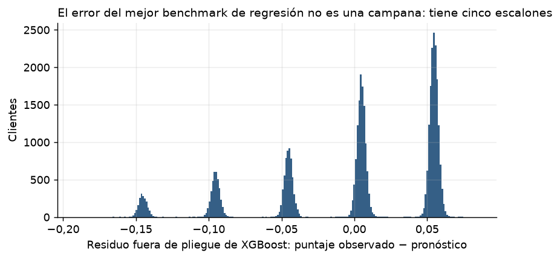
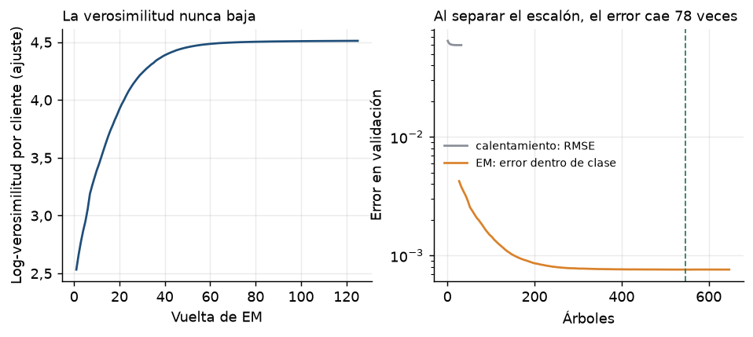
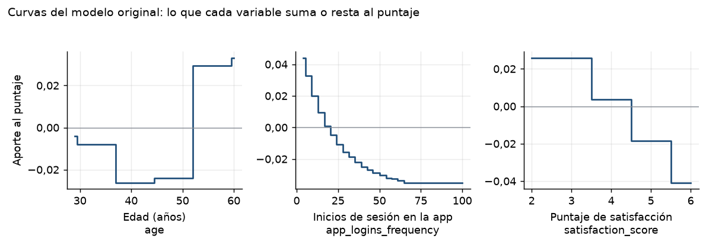

5. El modelo original: Boosting con Desplazamiento Latente (BDL)#
El código está en ModeloOriginal/src/original_model.py
y sus pruebas en ModeloOriginal/tests/; el apéndice Código del modelo original lo reproduce
completo, comentado. Solo usa numpy y scipy como herramientas de cálculo, y las clases base de scikit-learn para
entrar en un Pipeline.
# Preparación: acceso a los resultados versionados y a las funciones que generan las
# tablas y figuras del informe.
import sys
sys.path.insert(0, '../ModeloOriginal')
from src import informe as inf
5.1. La limitación que motiva el modelo#
En el Entregable 3 los mejores modelos de regresión (XGBoost, EBM, Random Forest) explican cerca del 22 % de la
varianza del puntaje de fuga y se detienen ahí. La causa no es la falta de capacidad de los modelos, sino la forma del
error. El puntaje se generó como un índice que depende de los predictores más un escalón por cada producto activo
del cliente, y esa variable (active_products) se excluye por fuga de información. Para un mismo x, el puntaje no se
dispersa como una campana alrededor de su media: cae en uno de cinco niveles separados por 0,05
(Figura 5.1).
# Figura 5.1. Histograma de los residuos fuera de pliegue de XGBoost sobre las
# 38.978 filas de entrenamiento
# (Entrega3/resultados/complementos/fuera_de_pliegue.parquet): cada fila se predice
# con un modelo que no la vio.
inf.figura('residuos_escalones')


Figura 3 Figura 5.1. Residuos fuera de pliegue del mejor benchmark de regresión (XGBoost) en entrenamiento: puntaje observado menos pronóstico. Interpretación: no hace falta conocer active_products para ver la estructura; el residuo no es una campana, tiene cinco modas separadas por 0,05.#
Todos los benchmarks tratan ese escalón como ruido:
los regresores minimizan el error cuadrático, que es la pérdida correcta cuando el ruido es normal. Con ruido multimodal siguen siendo consistentes, pero ineficientes: usan los datos como si la varianza del error fuera la del escalón (desviación 0,059), cuando dentro de cada escalón el error es unas ochenta veces menor (Proposición 4);
los clasificadores solo ven la etiqueta «riesgo alto» (
s > τ) y desechan el puntaje continuo que la define, es decir, cuánto le falta o le sobra a cada cliente para llegar al umbral. Dicotomizar una respuesta continua descarta información [Cohen, 1983, Royston et al., 2006].
La ineficiencia de los regresores se puede medir con el error del índice, la parte del pronóstico que depende de los predictores. La medida se hizo con los modelos finales y se adelanta aquí porque es la que mejor describe la limitación.
# Error del índice del mejor benchmark de regresión y del modelo original en la
# partición de prueba: lee resultados/predicciones_prueba.parquet y reconstruye el
# índice real con active_products, que ningún modelo recibe.
inf.texto('error_indice')
Evidencia en la partición de prueba. El pronóstico de un regresor de mínimos cuadrados es el índice más el desplazamiento medio; restándole ese desplazamiento queda el índice que el modelo aprendió. El de XGBoost se aparta del índice real con una desviación de 0,00316; el del modelo original, que separa el escalón, con una de 0,00130 (2,4 veces menor). El índice real se reconstruye con active_products, que ningún modelo recibe: se usa solo para esta medida.
El diseño responde directamente a esa limitación: modelar el escalón como una clase latente y quitárselo al objetivo antes de cada paso de boosting.
5.2. Formulación#
Para un cliente con predictores \(x\) y puntaje \(s\):
con \(z\) independiente de \(x\) y de \(e\). \(F(x) = \beta_0 + \nu\sum_{t=1}^{T} h_t(x)\) es una suma de árboles de regresión de profundidad \(d\) sobre las variables discretizadas en intervalos (bins); con \(d = 1\) es un modelo aditivo, \(F(x) = \beta_0 + \sum_j f_j(x_j)\), con una curva por variable. \(z\) es la clase latente (no se observa), \(c_k\) el desplazamiento de la clase \(k\), \(\pi_k\) su peso y \(\sigma\) la dispersión dentro de cada clase. Con \(K = 1\) el modelo es el boosting de mínimos cuadrados de Friedman [2001].
Los parámetros son \(F\) y \(\theta = (\pi, c, \sigma)\). La log-verosimilitud observada de \(n\) clientes es
donde \(\varphi_\sigma\) es la densidad normal de media 0 y desviación \(\sigma\). Maximizarla directamente es difícil por la suma dentro del logaritmo; el algoritmo EM [Dempster et al., 1977] la sustituye por una cota que sí se puede maximizar.
Supuestos. (S1) El desplazamiento es aditivo y no depende de \(x\). (S2) La clase latente es independiente de los
predictores. (S3) El error dentro de cada clase tiene la misma dispersión. En COFINFAD los tres se cumplen: el salto
medio entre niveles de active_products es constante (0,050), la variable no se puede predecir con las demás (AUC de
0,50 al intentarlo) y la dispersión del puntaje dentro de cada nivel es la misma (0,032 en los cinco). Cuando no se cumplen, el modelo no deja
de funcionar: el criterio BIC elige \(K = 1\) y BDL se reduce a un boosting de mínimos cuadrados (sección 5.6).
5.3. La regla de aprendizaje: EM generalizado con paso de boosting#
Sea \(r_i = s_i - F(x_i)\) el residuo. Cada vuelta hace tres cosas.
Paso E. Con el índice y la mezcla actuales, la probabilidad de que el cliente \(i\) pertenezca a la clase \(k\) es
Pasos de boosting (paso M parcial sobre \(F\)). La esperanza de la log-verosimilitud completa es
Como \(\sum_k \gamma_{ik} = 1\), el término cuadrático se separa en dos: \(\sum_k \gamma_{ik}(s_i - c_k - F_i)^2 = (\tilde s_i - F_i)^2 + \operatorname{Var}_{\gamma_i}(c)\), con
el objetivo sin escalón: el puntaje menos el desplazamiento esperado de su clase. La varianza no depende de \(F\), así que maximizar \(Q\) en \(F\) es minimizar \(\sum_i (\tilde s_i - F(x_i))^2\). No se resuelve del todo: se dan \(B\) pasos de boosting. En cada uno se ajusta un árbol \(h\) al residuo \(\tilde s_i - F(x_i)\) y se actualiza \(F \leftarrow F + \nu h\). El árbol se construye por niveles: en cada nodo elige la variable \(j\) y el corte \(b\) que maximizan la ganancia
donde \(G\) y \(N\) son la suma de residuos y el número de filas del nodo, y \(L\) y \(R\) sus dos hijos; el valor de una hoja es \(v = G/(N + \lambda)\).
Paso M (sobre \(\theta\)). Con el índice ya actualizado, \(r_i = s_i - F(x_i)\):
Algoritmo 1. Ajuste de BDL
Entradas: datos \((x_i, s_i)_{i=1}^n\); tasa \(\nu \in (0,1]\); profundidad \(d\); bins \(M\); mínimo de hoja; \(\lambda \ge 0\); vueltas máximas \(V\); árboles por vuelta \(B\); árboles de calentamiento \(T_0\); \(K_{\max}\); paciencia \(P\). Salidas: \(F\), \((\pi, c, \sigma)\), residuos de calibración.
Reparto. Dividir las filas al azar en ajuste (80 %), validación (10 %) y calibración (10 %).
Discretización. Con las filas de ajuste, cortar cada variable en a lo sumo \(M\) bins (un bin por valor si hay pocos valores distintos; cuantiles si hay muchos).
Calentamiento (\(K = 1\)). \(F \leftarrow \bar s\). Repetir hasta \(T_0\) veces: ajustar un árbol a \(s_i - F(x_i)\) y sumar \(\nu h\) a \(F\). Cortar antes si el error de validación no baja en 10 árboles, y volver al mejor.
Mezcla inicial. Con el residuo \(r_i\) de las filas de ajuste: para \(K = 1,\dots,K_{\max}\), K-medias exacto en una dimensión sobre el histograma de \(r\) y EM de la mezcla; elegir el \(K\) de menor BIC y conservar solo los desplazamientos separados por al menos \(4\sigma\) y con al menos el 1 % de las filas.
EM generalizado. Para \(v = 1,\dots,V\):
Paso E: \(\gamma_{ik}\) con (4); objetivo sin escalón \(\tilde s_i\) con (6).
Boosting: \(B\) veces, ajustar un árbol a \(\tilde s_i - F(x_i)\) y sumar \(\nu h\) a \(F\).
Paso M: \(\pi\), \(c\), \(\sigma\) con (8).
Parada: medir en validación el error dentro de clase, \(\big(\tfrac1m\sum_i \min_k (r_i - c_k)^2\big)^{1/2}\); si no mejora en \(P\) vueltas, detenerse.
Selección. Quedarse con los árboles y la mezcla de la mejor vuelta en validación.
Calibración. Guardar los residuos \(r_j = s_j - F(x_j)\) de las filas de calibración.
Criterio de parada: \(P\) vueltas sin mejora en validación, o \(V\) vueltas.
Valores usados. En todos los experimentos \(V = 400\), \(B = 5\), \(T_0 = 100\), \(K_{\max} = 8\) y \(P = 20\), que son los
valores por defecto de la clase; no se buscan. La búsqueda de hiperparámetros (Tabla 3.2) mueve
la tasa \(\nu\), la profundidad \(d\), el mínimo de hoja, \(\lambda\), el número de bins \(M\) y si se usa la mezcla
(n_componentes: «auto», que deja la elección de \(K\) al BIC, o 1); en clasificación, además, si se aprende del puntaje
o de la etiqueta (usar_puntaje).
5.4. La regla de salida#
Regresión. La media predicha es \(\hat s(x) = F(x) + \sum_k \pi_k c_k\). La distribución predictiva de un cliente nuevo es \(F(x) + r_j\), con \(r_j\) los residuos de calibración, en la línea de las distribuciones predictivas conformes [Vovk et al., 2019]; de ella salen la mediana, los cuantiles y los intervalos. El conjunto de predicción de cobertura \(1-\alpha\) usa la densidad de la mezcla, \(f(r) = \sum_k \pi_k \varphi_{\sigma}(r - c_k)\), como medida de conformidad:
con \(t_\alpha\) el \(\lfloor \alpha(m+1) \rfloor\)-ésimo menor valor de \(f(r_j)\) entre los \(m\) residuos de calibración. Con escalones, \(C_\alpha(x)\) es una unión de intervalos cortos, uno alrededor de cada nivel.
Clasificación. La etiqueta es \(y = \mathbb 1[s > \tau]\). La probabilidad de la clase positiva sale del modelo:
donde \(\sigma_r\) es la dispersión robusta del error dentro de clase medida en validación (1,4826 veces la mediana de las desviaciones absolutas). Cada clase latente aporta su peso si su nivel \(F(x) + c_k\) queda por encima del umbral. El umbral \(\tau\) no se pasa como hiperparámetro: se deduce de los datos, como el punto medio entre el mayor puntaje de un negativo y el menor de un positivo.
Si fit no recibe el puntaje (o usar_puntaje = False), el clasificador aprende de la etiqueta con el mismo motor
de árboles y pérdida logística (modo directo, Proposición 2). Es la variante «sin puntaje» de la ablación.
5.5. Sustento teórico#
Las demostraciones usan solo álgebra y resultados clásicos; cada proposición tiene una prueba unitaria que la verifica numéricamente.
Proposición 1. La verosimilitud no decrece
Sea \((F, \theta)\) el estado al empezar una vuelta del Algoritmo 1 y \((F', \theta')\) el estado al terminarla, con \(\nu \in (0, 2)\) y \(\lambda \ge 0\). Entonces \(\ell(F', \theta') \ge \ell(F, \theta)\). Además, si \(\sigma \ge \sigma_{\min} > 0\), la sucesión de verosimilitudes está acotada y converge.
Demostración. Por la descomposición de EM [Dempster et al., 1977], para cualquier \((F', \theta')\), \(\ell(F',\theta') - \ell(F,\theta) \ge Q(F',\theta') - Q(F,\theta)\), donde \(Q\) se calcula con las \(\gamma_{ik}\) del paso E en \((F,\theta)\) (la diferencia es una divergencia de Kullback-Leibler, que no es negativa). Basta ver que ninguno de los pasos baja \(Q\).
Boosting. Con \(\theta\) fijo, \(Q\) depende de \(F\) solo a través de \(-\frac{1}{2\sigma^2}\sum_i(\tilde s_i - F_i)^2\). Un árbol parte las filas en hojas \(R_1,\dots,R_L\); sean \(S_l = \sum_{i\in R_l}(\tilde s_i - F_i)\) y \(n_l\) el tamaño de la hoja, con valor \(v_l = S_l/(n_l+\lambda)\). Tras \(F' = F + \nu h\), el cambio de la suma de cuadrados es
Paso M. Con \(F'\) y \(\gamma\) fijos, (8) es el máximo de \(Q\) en \(\pi\) (multiplicador de Lagrange), en \(c\) (media ponderada) y en \(\sigma\); con el piso \(\sigma_{\min}\), el máximo restringido es \(\max(\sigma^*, \sigma_{\min})\) porque \(Q\) es unimodal en \(\sigma\). Por tanto \(Q(F',\theta') \ge Q(F',\theta) \ge Q(F,\theta)\).
Cota. Cada sumando de (3) es a lo sumo \(\log\big(1/(\sigma_{\min}\sqrt{2\pi})\big)\): una sucesión monótona y acotada converge. ∎
El calentamiento es el caso \(K = 1\), así que la proposición lo cubre. Verificación: test_verosimilitud_no_decrece y
test_verosimilitud_no_decrece_con_arboles_profundos.
Proposición 2. En modo directo, la pérdida logística no sube
Sea \(L(F) = \sum_i \big[\log(1 + e^{F_i}) - y_i F_i\big]\) y \(p_i = 1/(1+e^{-F_i})\). Si cada hoja da el paso \(v_l = G_l/(n_l/4 + \lambda)\), con \(G_l = \sum_{i \in R_l}(y_i - p_i)\), y \(\nu \in (0,2)\), entonces \(L(F + \nu h) \le L(F)\).
Demostración. La segunda derivada de \(\log(1+e^{f}) - yf\) es \(p(1-p) \le 1/4\), de modo que \(L(F+\delta) \le L(F) - \sum_i \delta_i (y_i - p_i) + \tfrac18\sum_i \delta_i^2\) [Böhning and Lindsay, 1988]. Con \(\delta_i = \nu v_l\) en la hoja \(l\),
∎
Verificación: test_perdida_logistica_no_sube.
Proposición 3. Cobertura de los conjuntos de predicción
Si las filas de calibración y el cliente nuevo son intercambiables, el conjunto (9) cumple \(P\big(s \in C_\alpha(x)\big) \ge 1 - \alpha\), sin suponer que el modelo (2) sea correcto.
Demostración. \(F\) y \(f\) se calculan con las filas de ajuste y de validación, de modo que son fijas respecto de las de calibración. Los valores \(a_j = f(r_j)\) de las \(m\) filas de calibración y el del cliente nuevo, \(a = f(s - F(x))\), son entonces intercambiables, y el rango de \(a\) entre los \(m+1\) es uniforme. El cliente queda fuera del conjunto solo si \(a\) es menor que \(t_\alpha\), es decir, si está entre los \(\lfloor\alpha(m+1)\rfloor\) menores, lo que ocurre con probabilidad a lo sumo \(\alpha\) [Lei et al., 2018, Vovk et al., 2005]. ∎
Verificación: test_cobertura_conforme.
Proposición 4. El error cuadrático desperdicia información cuando hay escalones
Sea \(r = c_z + e\) el error del modelo (2), con densidad \(f\), e \(I_f = \int (f')^2/f\) su información de Fisher para un parámetro de localización. Entonces
con igualdad a la izquierda solo si \(K = 1\), e \(I_f \to 1/\sigma^2\) cuando la separación entre desplazamientos crece frente a \(\sigma\).
Demostración. Izquierda. La media muestral es un estimador insesgado de la localización con varianza \((\sigma^2 + \operatorname{Var}(c_z))/n\); por la cota de Cramér-Rao esa varianza es al menos \(1/(n I_f)\). La igualdad exige que la derivada de \(\log f\) sea lineal, es decir, que \(f\) sea normal. Derecha. Si además se observara \(z\), la información sería \(1/\sigma^2\); observar menos no puede dar más (principio de la información faltante [Dempster et al., 1977]). Límite. Con las clases separadas, \(\gamma_{ik}\) tiende a 0 o a 1 y la información faltante tiende a cero. ∎
Verificación: test_informacion_de_fisher_entre_las_cotas, que integra numéricamente \(I_f\) para mezclas con distinta
separación.
Consecuencia: el estimador de mínimos cuadrados tiene varianza proporcional a \(\sigma^2 + \operatorname{Var}(c_z)\) y
el de máxima verosimilitud de la mezcla, a \(1/I_f\). En COFINFAD, \(\operatorname{Var}(c_z) = 0{,}059^2\) y
\(\sigma \approx 0{,}0007\): la cota (13) dice que la estructura de los datos permitiría una varianza varios
miles de veces menor que la de los mínimos cuadrados. En la práctica la ganancia es mucho más modesta (el error del
índice se reduce a menos de la mitad, sección 5.1), porque lo que queda ya no es varianza sino error de aproximación:
los bins, la cola de tx_count y el número finito de árboles. Y por eso BDL afina el índice aunque el RMSE apenas se
mueva: el RMSE está dominado por el escalón, que ningún modelo puede predecir.
Proposición 5. La probabilidad de excedencia es la regla de Bayes del modelo
Si (2) se cumple, \(P(s > \tau \mid x) = \sum_k \pi_k \Phi\big((F(x) + c_k - \tau)/\sigma\big)\). Cuando \(\sigma \to 0\) es una función escalonada de \(F(x)\) que solo toma los valores \(\sum_{k:\,F(x)+c_k>\tau}\pi_k\).
Demostración. Condicionando en la clase, \(P(s>\tau\mid x, z=k) = P(e > \tau - F(x) - c_k) = \Phi\big((F(x)+c_k-\tau)/\sigma\big)\), y se promedia con \(\pi_k\) porque \(z\) es independiente de \(x\). ∎
La regla implementada, (10), es esa misma expresión con los parámetros estimados y con una sola
sustitución: en lugar de la \(\sigma\) del paso M usa la dispersión robusta \(\sigma_r\) medida en validación. Es, por
tanto, un estimador de la regla de Bayes y no la regla exacta: coincide con ella cuando el modelo se cumple y \(\sigma_r\)
estima \(\sigma\), y la razón de preferir \(\sigma_r\) está en la Tabla 5.2. Verificación:
test_excedencia_coincide_con_la_frecuencia, que compara la probabilidad con la frecuencia observada en datos nuevos.
La consecuencia práctica es un techo: dentro de una meseta todos los clientes tienen la misma probabilidad, y ningún clasificador puede ordenarlos mejor que al azar. El techo del AUC se calcula con \(\pi\) y la distribución de \(F(x)\); en COFINFAD vale 0,835 en entrenamiento y 0,831 en prueba (sección 6.4).
Convergencia observada. La Figura 5.2 muestra el ajuste del modelo final de regresión sobre COFINFAD, y la Tabla 5.1, cómo elige el número de clases.
# Figura 5.2. Carga la tubería final de regresión (resultados/modelos) y dibuja su
# atributo historial_: la verosimilitud de cada vuelta de EM y el error de
# validación del calentamiento y del EM.
inf.figura('convergencia')


Figura 4 Figura 5.2. Convergencia del modelo final de regresión. Izquierda: log-verosimilitud por cliente en las filas de ajuste, en cada vuelta de EM. Derecha: error en las filas de validación, en escala logarítmica; durante el calentamiento es el RMSE del puntaje y durante el EM es el error dentro de clase (la línea verde marca los árboles que se conservan). Las dos curvas del panel derecho miden cosas distintas y por eso no se unen. Interpretación: la verosimilitud nunca baja, como dice la Proposición 1, y al separar el escalón el error que queda por explicar cae casi dos órdenes de magnitud (el título del panel da el cociente exacto).#
Tabla 5.1. Elección del número de clases latentes en el modelo final de regresión: criterio BIC de la mezcla ajustada al residuo del calentamiento para cada \(K\), y clases que quedan tras la regla de parsimonia.
# Tabla 5.1. Del mismo historial_: el BIC de cada K y las clases útiles (separadas
# 4σ y con al menos el 1 % de las filas).
inf.tabla('tabla_bic')
K |
BIC |
Clases que quedan tras la regla de parsimonia |
|---|---|---|
1 |
−88.023 |
1 |
2 |
−95.867 |
1 |
3 |
−98.143 |
2 |
4 |
−116.023 |
4 |
5 |
−157.752 |
5 |
6 |
−157.731 |
5 |
7 |
−157.712 |
5 |
8 |
−157.692 |
5 |
Modelo final de regresión: K = 5; pesos 0,050, 0,098, 0,149, 0,301, 0,402; separación media entre desplazamientos 0,0500; 547 árboles (22 de calentamiento); dispersión dentro de clase en validación 0,00076 (robusta: 0,00005).
El BIC deja de mejorar al pasar de cinco clases, y la regla de parsimonia descarta las que solo parten un escalón en dos: el modelo encuentra los cinco niveles sin que nadie le diga cuántos hay.
5.6. Decisiones de diseño y su justificación#
Tabla 5.2. Decisiones de diseño del algoritmo y su justificación.
Decisión |
Justificación |
|---|---|
Un solo índice \(F\) y desplazamientos constantes (no una regresión por clase) |
Es lo que dice la evidencia: el salto entre niveles es constante. Con \(K\) regresiones habría \(K\) veces más parámetros y cada una vería menos datos |
Calentamiento con \(K = 1\) y parada temprana |
Los escalones solo se distinguen cuando el residuo es menor que su separación; cortar a tiempo evita que el sobreajuste los deforme |
K-medias exacto sobre el histograma para iniciar la mezcla |
Determinista, de costo independiente de \(n\), y no deja dos centros en el mismo escalón |
\(K\) por BIC con regla de parsimonia |
El BIC premia partir un escalón en dos componentes superpuestos o dedicar uno a un puñado de atípicos; ninguno es una clase latente |
Varios árboles por vuelta de EM |
Las responsabilidades cambian despacio; recalcularlas tras cada árbol cuesta más que el árbol |
Paso de hoja por cota cuadrática en modo directo |
Garantiza el descenso de la pérdida (Proposición 2) sin búsqueda en línea |
Dispersión robusta en la excedencia |
El índice se equivoca mucho en menos del 1 % de los clientes; con la raíz del error cuadrático medio esos pocos ensanchan la transición de todos |
Reparto interno 80/10/10 |
Separa los tres usos de los datos: ajustar los árboles, decidir cuándo parar y calibrar la salida conforme |
5.7. Complejidad#
Sean \(n\) filas, \(p\) columnas, \(M\) bins por columna, \(T\) árboles de profundidad \(d\), \(V\) vueltas de EM y \(K\) clases.
Discretización: \(O(n\,p \log n)\), una vez.
Un árbol: el histograma de la raíz es un producto de la matriz indicadora (un uno por fila y columna) por el vector de residuos, \(O(n\,p)\). En cada nivel siguiente solo se calcula el histograma del hijo con menos filas y el otro sale por resta, a lo sumo \(O(n\,p/2)\) por nivel. Elegir los cortes cuesta \(O(2^d\, p\, M)\).
Pasos E y M: \(O(n\,K)\) por vuelta.
En total, el entrenamiento es \(O\big(T\,(n\,p\,d + 2^d p M) + V n K\big)\) en tiempo y \(O(n\,p)\) en memoria. La inferencia es \(O(p \log M)\) por cliente con \(d = 1\) (una búsqueda de bin y una consulta por variable, sin recorrer árboles) y \(O(T\,d)\) con árboles más profundos. El contraste con los tiempos medidos al variar \(n\) y \(p\) está en el capítulo 7.
5.8. Implementación y pruebas unitarias#
La clase RegresorBDL hereda de RegressorMixin y BaseEstimator; ClasificadorBDL, de ClassifierMixin y
BaseEstimator, con fit, predict y predict_proba. ModeloOriginal es un alias de ClasificadorBDL. El puntaje
continuo entra por fit(X, y, puntaje=s), como cualquier parámetro de ajuste de scikit-learn: la validación cruzada lo
recorta a las filas de entrenamiento de cada pliegue. La Tabla 5.3 dice en qué función está cada
pieza del algoritmo y la Tabla 5.4, qué prueba cubre cada requisito de la guía.
Tabla 5.3. Piezas del algoritmo y función que las implementa.
Pieza |
Función en |
|---|---|
Discretización |
|
Histogramas por bin |
|
Árbol de regresión propio |
|
Mezcla |
|
EM generalizado |
|
Salida |
|
Interpretación |
|
Modo directo |
|
Las pruebas (python -m pytest -q en ModeloOriginal/; se ejecutan en cada push con GitHub Actions) cubren lo que
pide la guía:
Tabla 5.4. Requisitos de la guía para las pruebas unitarias y prueba que cubre cada uno.
Requisito de la guía |
Prueba |
|---|---|
Aprende en datos sintéticos con solución conocida |
|
Reproducibilidad con la misma semilla |
|
Entradas inválidas |
|
Compatibilidad con |
|
Propiedades teóricas |
|
Piezas internas |
|
El módulo no importa ningún modelo |
|
5.9. Ablación#
Cada variante retira un componente y pasa por el mismo procedimiento que el modelo completo (validación anidada de 5 × 3, semilla 42, 30 evaluaciones). Se compara con el modelo completo con dos de las pruebas del protocolo: la t corregida sobre los pliegues externos (P2) y la prueba pareada sobre la partición de prueba (P3: permutación en regresión y DeLong en clasificación), con el ajuste de Holm entre las variantes de cada tarea. La Tabla 5.5 dice cuánto aporta cada componente.
Tabla 5.5. Ablación: métrica de cada variante en los pliegues externos y en prueba, y aporte del componente retirado (lo que mejora el modelo completo respecto de la variante), con su p-valor ajustado por Holm.
# Tabla 5.5. Lee resultados/ablacion.csv, que escribe experiments/07_ablacion.py:
# cada variante pasa por la misma validación anidada que el modelo completo y se
# compara con él con la t corregida (pliegues) y en prueba.
inf.tabla('tabla_ablacion')
Regresión (RMSE, menor es mejor).
Variante |
RMSE externo |
RMSE en prueba |
Aporte del componente (externo) |
p (t corregida, Holm) |
Aporte en prueba |
p (prueba, Holm) |
|---|---|---|---|---|---|---|
BDL completo |
0,05887 ± 0,00041 |
0,05912 |
— |
— |
— |
— |
BDL sin mezcla (K = 1) |
0,05898 ± 0,00041 |
0,05910 |
0,000107 (5/5) |
0,040 |
−0,000016 |
0,625 |
Clasificación (AUC, mayor es mejor).
Variante |
AUC externo |
AUC en prueba |
Aporte del componente (externo) |
p (t corregida, Holm) |
Aporte en prueba |
p (prueba, Holm) |
|---|---|---|---|---|---|---|
BDL completo |
0,8320 ± 0,0026 |
0,8311 |
— |
— |
— |
— |
BDL sin mezcla (K = 1) |
0,8299 ± 0,0009 |
0,8311 |
0,00211 (5/5) |
0,652 |
−0,00009 |
1,000 |
BDL sin puntaje (aprende de la etiqueta) |
0,8292 ± 0,0028 |
0,8253 |
0,00284 (4/5) |
0,652 |
0,00578 |
0,065 |
BDL con salida conforme empírica |
0,8313 ± 0,0024 |
0,8315 |
0,00075 (3/5) |
0,729 |
−0,00044 |
1,000 |
Aporte: lo que mejora el modelo completo respecto de la variante (positivo: el componente ayuda). En prueba, la comparación es DeLong en clasificación y permutación pareada en regresión.
Lectura. En regresión (RMSE), retirar la mezcla (\(K = 1\)) cuesta 0,000107 en la media externa (el modelo completo va por delante en 5 de 5 pliegues; p = 0,040) y en prueba la variante queda 0,000016 por delante (p = 0,625). En clasificación (AUC), retirar la mezcla (\(K = 1\)) cuesta 0,00211 en la media externa (el modelo completo va por delante en 5 de 5 pliegues; p = 0,652) y en prueba la variante queda 0,00009 por delante (p = 1,000); aprender de la etiqueta en lugar del puntaje cuesta 0,00284 en la media externa (el modelo completo va por delante en 4 de 5 pliegues; p = 0,652) y en prueba cuesta 0,00578 (p = 0,065); cambiar la salida de la mezcla por la conforme empírica cuesta 0,00075 en la media externa (el modelo completo va por delante en 3 de 5 pliegues; p = 0,729) y en prueba la variante queda 0,00044 por delante (p = 1,000). Tras el ajuste de Holm, en los pliegues externos solo es significativo el costo de retirar la mezcla (\(K = 1\)) en regresión; en prueba, ninguno. En clasificación, lo que más pesa en prueba es aprender del puntaje continuo y no de su dicotomización: es la diferencia entre un AUC de 0,8311 y uno de 0,8253. Que los aportes sean tan pequeños es coherente con la sección 6.4: con todas las filas, un boosting sin mezcla ya está casi en el límite del conjunto. En regresión la mezcla no cambia lo que el modelo estima, que es la media condicional del puntaje, sino con cuántos datos lo consigue (sección 7.5). Lo que añade es lo que el modelo sabe del error: cuántos niveles hay, dónde están y con qué probabilidad (sección 7.8).
5.10. Interpretabilidad#
Con profundidad 1 el índice es aditivo y cada variable aporta una curva que se puede graficar, igual que en la EBM.
El aporte de una variable a la predicción de un cliente es el valor de su curva menos la media de esa curva: son los
valores de Shapley [Lundberg and Lee, 2017] exactos de un modelo aditivo. Con árboles más profundos, contribuciones reparte cada árbol
enumerando los subconjuntos de sus variables, de modo que la suma de los aportes es exactamente la predicción
(test_aportes_suman_la_prediccion). La Tabla 5.6 ordena las variables por su aporte y la
Figura 5.3 muestra las curvas de las tres primeras.
Tabla 5.6. Importancia global en el modelo final de regresión: aporte medio absoluto de cada variable al puntaje predicho (valores de Shapley exactos, 2.000 clientes de prueba) y comparación con el mejor benchmark.
# Tabla 5.6. Carga la tubería final de regresión, calcula contribuciones() sobre
# 2.000 clientes de prueba y promedia su valor absoluto por variable; la comparación
# usa los valores SHAP de XGBoost que publica el dashboard.
inf.tabla('tabla_importancia')
N.º |
Variable |
Aporte medio absoluto al puntaje |
Parte del total |
|---|---|---|---|
1 |
|
0,02084 |
45,5 % |
2 |
|
0,01512 |
33,0 % |
3 |
|
0,00956 |
20,9 % |
4 |
|
0,00017 |
0,4 % |
5 |
|
0,00003 |
0,1 % |
6 |
|
0,00002 |
0,1 % |
7 |
|
0,00001 |
0,0 % |
8 |
|
0,00001 |
0,0 % |
Las cinco variables de más peso en BDL son age, app_logins_frequency, satisfaction_score, tx_count, n_tx; en el mejor benchmark de regresión (XGBoost, valores SHAP de 500 clientes de prueba), age, app_logins_frequency, satisfaction_score, base_satisfaction, monto_mediano.
# Figura 5.3. Dibuja el atributo formas_ del modelo (una curva por variable,
# definida en cada bin), centrado en su media y devuelto a la escala original de la
# variable con la media y la desviación del preprocesamiento.
inf.figura('formas_bdl')


Figura 5 Figura 5.3. Curvas del modelo final de regresión para sus tres variables de más peso: lo que cada valor de la variable suma o resta al puntaje de fuga (eje vertical, en unidades del puntaje). El eje horizontal es el valor de la variable en su escala original: la edad en años, el número de inicios de sesión en la aplicación (el conjunto no declara el periodo) y el puntaje de satisfacción de la encuesta, un entero de 2 a 6. Interpretación: el puntaje es más alto para los clientes de más edad (59 y 60 años) y más bajo para los de 44 y 45; baja con cada ingreso adicional a la aplicación hasta estabilizarse, y baja con la satisfacción. Son los tres efectos que componen el índice del conjunto.#